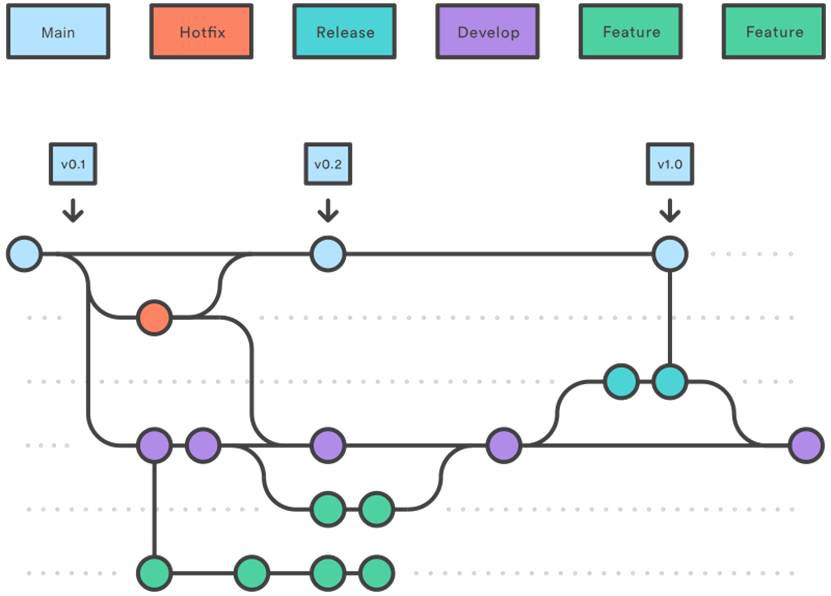
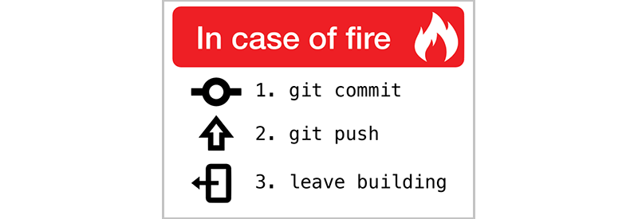

Git basics
Three good reasons for using a version control software on daily basis:
- backup of your source code
- keep track of code changes (history)
- force to apply a workflow when working in team
Choose the tool that best fits your habits. I suggest Git because it's widely used, powerful, and easy to integrate on most IDE. There are also a lot of website that offer free online storage for your git repository projects.
Overview
Official site here: Git
Another good source of information can be the Atlassian software development portal: Getting Git Right
Git permits different workflows based on the way branches are organized. A common approach is named Gitflow, typically each company adapt these guidelines on their specific projects.

Some personal notes when defining workflow, branches, operations:
- Think about team size and member's expertise
- Conflicts issues during pull/merge request must be resolved in a short time
- Create new branches is cheap operation on git
- Frequent commits
- Push daily (means backup on remote server)
- Learn it via bash then go for GUI
Installation
Download and run the Installer.
Then configure your local account:
git config --global user.name “YOUR USERNAME”
git config --global user.email “YOUREMAILADDRESS@EXAMPLE.COM”
Check your current configuration:
git config --global --list
Remote and local repo
Most of the time you will contribute to an existing project. The first step is to get a local copy of the sourcecode from the repository (remote server).
git clone <put here URL of repository>
Be aware that hidden folder ".git" contains information and history of the repository. Don't delete it and don't edit the content.
Daily operations
Pull
Keep your local branches synchronized, run the git pull command in order to fetch and download content from remote repository.
git pull
git pull <put here URL of repository>
git pull --verbose
Branch and Checkout
Before changing anything on your local copy make sure you are working on the right branch, list them:
git branch
git branch --list
To create a local branch:
git branch <put here name>
To create a remote branch:
git remote add <remote branch name> <put here URL of repository>
Change (local) current working branch using:
git checkout <put here branch name>
Status, Add and Commit
Be familiar with the concept of staging area, and verify the current status with:
git status
Then add files and changes you want to commit via:
git add <filename>
git add <directory>
git add -u <- stage modified and deleted files only (already part of the index)
git add . <- stage all files in the entire repository
Finally create a snapshot of these changes, it will be available in the history of commits of the branch.
git commit -m "commit short description"
git commit
I strongly suggest to use git commit, in order to open the predefined editor and write a complete description of the changes, including:
- First line: short and clear headline
- Second line: always empty
- Third line and others: all useful information
- Please list the missing features (still ongoing or todo)
- Add guidelines to compile the project, test it, and run simulations
- Put notes for the "you from the future"
Some tips are available here. When closing the editor the commit will be automatically done. Check the history via:
git log --oneline
git log -p <commit A sha> <commit B sha>
git show <commit sha>
git show <commit sha> --stat
git show <commit sha>:filepathname > filepathname_of_the_copy
If you want to get rid of all your changes (staged and not) and go back to the last commit use:
git reset --hard
Push
Upload your local repository content to the remote one, via git push command:
git push
git push <remote branch name>
If you want to configure a relationship between your local branch and a remote one proceed as:
git checkout <local branch>
git branch --set-upstream-to=<remote repo/branch>
git branch -vv
Funny, but think about it...

Stash
Sometimes you have to switch quickly to other branches (to fix a bug or check something ... ) but git can't switch branches if there are changes pending on your current branch. At the same time you don't want to clone another repo or worst to loose your current sourcecode.
The git stash command can help you, temporary storing your code changes. Then they can be retrieved any time in the future. Please read here.
Files management
There are some files you may want Git to ignore and not track in your repository. These include many that are auto-generated (by IDE) or platform-specific, as well as other local configuration files or compiled code (.elf .exe .bin).
To do that create a hidden file name ".gitignore" and edit putting inside all folders and name files that you want to ignore. Please note that multiple .gitgnore files can be created inside each project folder for better filter granularity. Here some templates
Example for Atmel embedded project:
## Ignore Atmel Studio temporary files and build results
# Atmel Studio is powered by an older version of Visual Studio,
# so most of the project and solution files are the same as VS files,
# only prefixed by an `at`.
#Build Directories
[Dd]ebug/
[Rr]elease/
#Build Results
*.o
*.d
*.eep
*.elf
*.hex
*.map
*.srec
#User Specific Files
*.atsuo
Other files are usually part of the repository:
- README.md Short project info, installation and configuration, sw architecture, and notes.
- CONTRIBUTE.md Guideline for contributing to the project.
- LICENSE.md Software license information
Links
Git guide from Github platform
Gitflow in 5 minutes
Git tutorial from freeCodeCamp.org
Third-party Git GUI clients: Tortoise Git, GitHub Desktop, Sourcetree